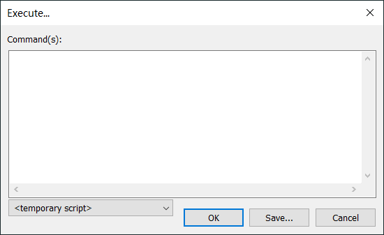
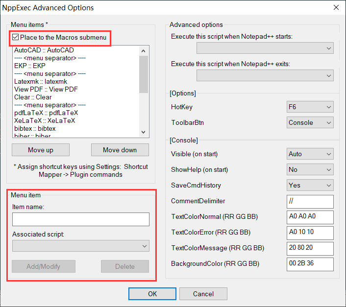
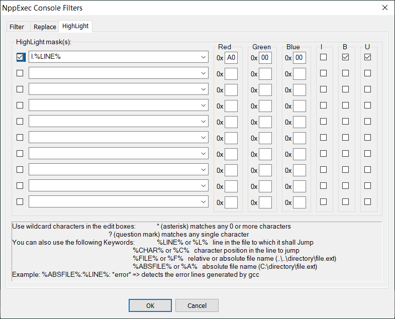

Notepad++ 是一款轻量化的开源文本编辑器，它启动速度快，具有强大的编辑功能，除了可以用来制作一般的纯文字说明文件，也十分适合编写计算机程序代码，支持众多计算机程序语言。Notepad++ 不仅有语法高亮度显示，也有语法折叠功能，并且支持宏以及扩充基本功能的扩展模块。利用 Notepad++ 的插件 NppExec、Customize Toolbar 并配合 SumatraPdf，可将 Notepad++ 打造成一款优秀的 LaTeX 前端。本文将对这几款软件的配置方法做一个简要的介绍。
需要的环境
- TeX 发行版： TeXLive 或 MiKTeX 均可。
- Notepad++ V 7.8： 64位安装程序 32位安装程序，本文假定其安装的路径为
C:\Program Files\Notepad++ - Notepad++ 插件 NppExec：可在Notepad++ 菜单
插件->插件管理中查找安装。 - Notepad++ 插件 Customize Toolbar：安装方法同上。
- SumatraPDF：本文假定其安装路径为
C:\Program Files\SumatraPDF
NppExec —— Execute
- 首先用 Notepad++ 打开一个
.tex文件。 - NppExec 安装完成后，快捷键
F6调出 Execute 对话框：
 - 在窗口内输入如下代码：
1 | cd $(CURRENT_DIRECTORY) |
简要介绍一下代码含义，$(CURRENT_DIRECTORY) 是 NppExec 插件的设置的变量，表示当前文件所在的目录；$(NAME_PART) 表示当前文件文件名（不含扩展名）。这两句代码的含义就很好理解了，进入当前目录，对当前文件用 xelatex 以指定参数进行编译。为了能够实现正反向搜索，这里编译命令必须设置 synctex 不为 0，其他参数可以根据自己的需要设置。
- 将这段临时脚本起名保存为
XeLaTeX，点击 ok 按钮即开始这段脚本。 - 类似地，我们可以创建其他编译命令的执行脚本，不一一赘述。
- 为了实现以 SumatraPDF 实现正反向搜索，预览
.pdf文件的脚本应输入如下代码：
1 | cd $(CURRENT_DIRECTORY) |
简单解释几个命令和变量：Npp_run 是 NppExec 附带的命令，表示执行外部程序和命令；$(CURRENT_LINE) 表示文件的当前行。只要你能明白 \" 是字符串中 " 的转义，这一句命令就很容易看明白，它表示启动 SumatraPDF 打开与文档同名的 .pdf 文件，并显示当前行编译结果位置的页面，同时为 SumatraPDF 设定反向搜索参数 "C:\Program Files\Notepad++\Notepad++.exe" -n%l %f $(NAME_PART).pdf。
- 若要形成编译链，连续使用几个既已保存的脚本，可以不用将脚本命令重复 copy，可以使用 NppExec 附带命令
Npp_exec执行相应脚本即可。例如，已经设置保存了XeLaTeX、bibtex和View PDF三个脚本，若需创建一个标准的完整编译过程的脚本，可以在Execute 窗口输入如下代码并保存即可。
1 | Npp_exec "XeLaTeX" |
其实我个人不是非常喜欢用这种编译链的方式，更喜欢配置 latexmkrc 来使用 latexmk 进行编译。
NppExec —— Advanced Options
采用菜单项 插件 -> NppExec-> Advanced Options 可以进行一些高级设置，将已经保存的脚本加入到菜单项中。如下图所示：

Menu item 一栏可以选择需要添加到菜单的脚本，并为菜单项设置名称；Menu item* 一栏中 Place to the Macros submenu 的 checkbox 勾选之后，菜单项将添加在 宏(M) 菜单项之下。
对话框的其他设置，用户可以根据自己的需要自行选择设置。
NppExec —— Console Output Filters
快捷键 Shift+F6 可以调出 NppExec 控制台输出过滤。

在HighLight 选项卡中，我们可以设置控制台信息过滤条件：l.%LINE%，并设置高亮颜色和粗体下划线样式。在勾选最前面的checkbox 启用这个条件后，我们可以编辑一个简单的 tex 文件：
1 | \documentclass{article} |
我们故意写错 \LaTeX 为 \latex，进行编译后，显然系统将给出报错信息，我们发现控制台会先的报错信息中：
1 | l.4 hello!\latex |
已经成为了我们设定的格式。双击这条报错信息，在文本编辑器内，光标将定位到出错这一行的行首。这个设置实现了错误快速定位。
利用 Customize Toolbar 为常用菜单项添加工具条按钮
- Customize Toolbar 安装完成后，菜单项
插件->Customize Toolbar->Custom Buttons可以启动用户自定义工具条按钮。按钮的配置是通过文件%APPDATA%\Notepad++\plugins\config\CustomizeToolbar.btn实现的。文件示例如下：
1 | 宏(M),pdfLaTeX,,,pdflatex.bmp |
其中，每一行均为4个 , 分隔成的5部分，前4部分为各级菜单项名称，必须与当前菜单选用的界面语言一致，最后一项为按钮显示图标文件名，图标文件必须为 16 16 的 .bmp 格式图像。特别需要注意的是：CustomizeToolbar.btn 的文件编码格式必须保存为：UCS-2 Little Endian 含 BOM，文件行尾格式必须为 Windows (CR LF)。
至此，对 Notepad++ 的配置基本完毕，Notepad++已经被打造成一个不错的 LaTeX 前端， Happy TeXing！